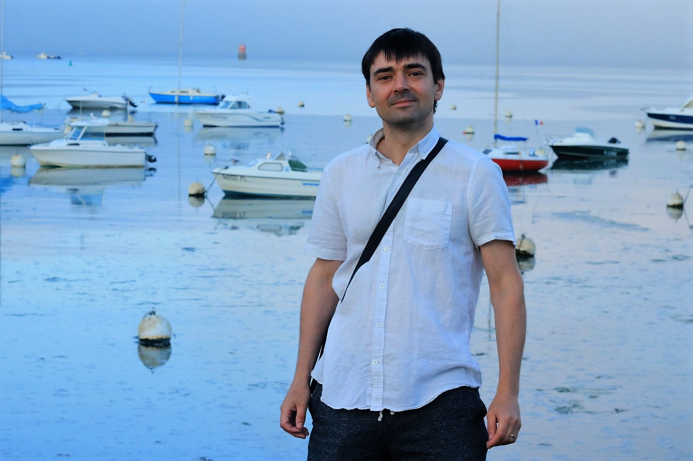
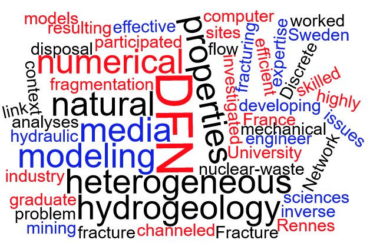

r[dot]legoc[at]itasca[dot]fr
rlegoc[at]gmail[dot]com

Hey! I'm a scientist at the Fractory, a research lab funded by Itasca Consultants and the OSUR (CNRS/Univ. Rennes).
My current resarch is on Discrete fracture Networks (DFN) structural, flow and mechanical properties. I have worked on both theoretical and practical aspects of numerical simulations of fractured rocks.
My research projects focus on various fundammental aspects related to fractures in geological media:
I'm actively involved in the development of DFN related software:
DFNLab: I'm the software architect and lead developper of this collection of modules to deal with Discrete Fracture Networks.
Itasca Software: I've developed the DFN module in ITASCA software, which allows DFN manipulation and integration in the well-known ITASCA software for geomechanical simulations
Deprecated:
H2OLab : I was involved in the developpement of this academic software for simulating flow in geological media.
January, 2023: Our article on indicators of flow in fractured rocks has been published by Academue des Sciences. It is available online .
November, 2022: I've been invited to the 51st Geomechanics-Colloquium in Freiberg (Germnay) to present our modelling approach of fratured rocks. Many thanks to the organizers (see additional details here .
January, 2022: We published an extended version of the article on machine learning, available here .
December, 2021: We presenting our work on effective hydraulic conductivity tensors in fratures rock at the AGU 2021 (see details here .
June, 2021: I'm haapy to have co-authored this conference paper presented at the DFNE 2021. Thanks Diane fir the good work (see details here .
April, 2021: Our article with Itasca CG and Fractory co-authors on thermo-hydro-mechanical coupling for reservoir simulations has been accepted by ARMA2021. It will be soon available online.
May, 2020: My article with J. Furtney on machine learning in geomechanical projects has been accepted. You can find the associated code on gitlab.
December, 2019: The Fractory website presenting our DFN software for fractured media DFN.lab is now online. Please visit it to see the evolution of the code.
December, 2019: The AGU Fall Meeting was a big success, I spent 4 non-stop hours during the poster session to explain our work and software. The posters are downloadable directly from the AGU website here and here .
November, 2019: We present many papers at the comming AGU General meeting in this session . I'll present DFN.lab while students and post-doc of the Fractory will present their work.
July, 2019: P. Davy, director of the Fractory, is organizing a session at the AGU on fractured media .
April, 2019: Diane presented our work
at the EGU General assembly in Vienna.
November, 2018: I participated in the Posiva Working Report
Discrete Fracture Network Modelling (Version 3) in Support of Olkiluoto Site Description 2018
.
August, 2018: Our paper Elastic properties of fractured rock masses with frictional properties and power-law fracture size distributions
has been published in
JGR !
June, 2018: I have presented our work Evaluation of Discrete Fracture
Network models using flow-based indicators
at the
DFNE 2018 . I'm also co-authoring other presentations on rock mass properties and DFN theory.
June, 2018: I have presented our work Progress on Discrete Fracture Network (DFN) flow modelling
at the
CMWR 2018 . I'm also co-authoring another presentation on the elastic properties of rock masses.
April, 2018: I'm happy to announce that I've officially moved in Rennes to work in the
Fractory office!